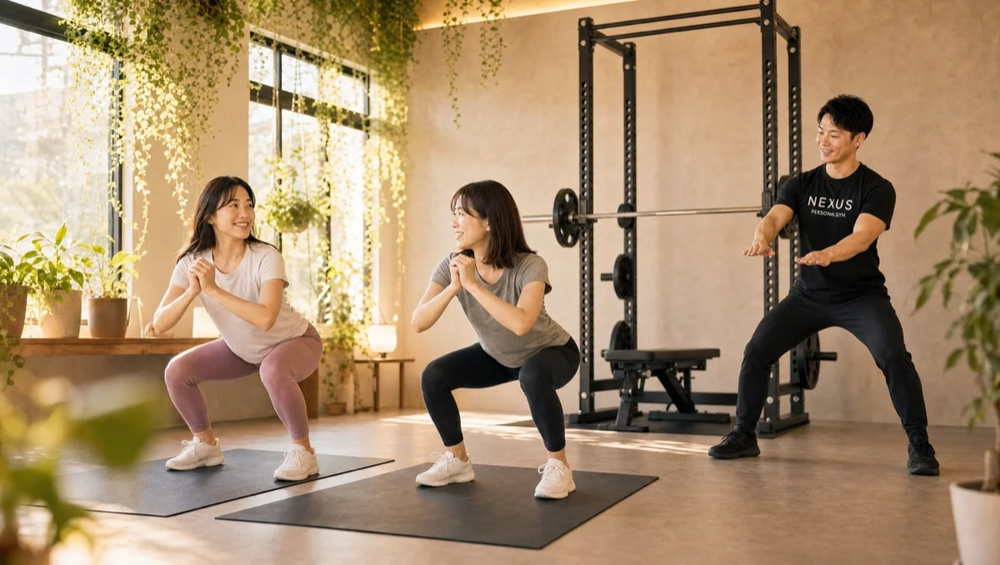

NEXUS Personal Gym ／ 東京都墨田区
NEXUSパーソナルジム 菊川店｜急がずに確実に変わる完全個室ジム

都営新宿線・菊川駅から通える、完全個室の隠れ家パーソナルジムです。菊川店が大切にしているのは「急がない」こと。2ヶ月で一気に落とす短期集中型ではなく、月1kgずつ・1年かけて確実に変わっていくスローペース設計です。飲み会が避けられなくても、できる範囲の工夫で続けられる現実的な食事指導と、雑談しながら楽しく通える雰囲気で、「何をやっても続かなかった」という方が1年通い続けています。急激な減量とちがってリバウンドしにくく、無理な我慢もいりません。家から近くて手頃な「ご近所ジム」として、菊川・住吉・森下エリアの方に親しまれています。毎日8:00〜23:00・手ぶらOK・LINE予約で、長く無理なく続けられます。
- 完全個室
- 菊川駅から
- 月1kgのスローペース
- ★4.9（85件）
- 毎日8:00〜23:00
この店舗の特徴
NEXUS菊川店は、都営新宿線・菊川駅から通える完全個室パーソナルジム。落ち着いた住宅街にある隠れ家ジムです。この店舗いちばんの個性は、徹底した「スローペース設計」。世の中のパーソナルジムが「2ヶ月で−10kg」といった短期集中を打ち出すなか、菊川店はあえてその逆。月1kgずつ、1年かけて確実に変わっていくことを大切にしています。急激な減量は身体への負担が大きく、リバウンドしやすいもの。ゆるやかなペースなら筋肉を落とさず脂肪だけを減らしやすく、無理な我慢もいらないので習慣として定着します。さらに、飲み会が避けられなくても「できる範囲」で続けられる現実的な食事指導と、雑談しながら楽しく通える雰囲気が、継続を後押しします。会員からは「何をやっても続かないタイプだが、1年続いている」という声も。家から近く手頃な価格で始められる「ご近所ジム」として、菊川・住吉・森下エリアの方に長く選ばれています。ウェア・タオル・ドリンク・プロテインまで無料提供の手ぶら通いOK、予約はLINEでサッと完結します。
月1kg。それがいちばん確実
「早く痩せたい」——その気持ちはよくわかります。でも、急いで落とした体重ほど、あっという間に戻ってしまうもの。菊川店が提案するのは、月1kgずつ・1年かけて確実に変わっていく方法です。月1kgと聞くとゆるやかに感じるかもしれませんが、1年で12kg。しかも筋肉を落とさず脂肪だけを減らしていくので、見た目の変化はしっかり実感できます。会員からは「1年で月1kgペースの減量。見た目もかなり変わった。飲み会があっても、できる範囲での工夫を教えてくれる」という声をいただいています。急激な糖質カットや過度な食事制限は、一時的に体重を落とせてもストレスが大きく、リバウンドの引き金になりがちです。菊川店では、飲み会も楽しみながら「今のあなたにできる範囲」で少しずつ整えていきます。遅く見えて、実はいちばん確実。「遅いは強い」——それが菊川店の食事指導です。
1年通って月1kgペースで着実に減量できました。飲み会が避けられなくても、できる範囲のアドバイスで無理なく続けられています。焦らず取り組めるのが自分に合っていました。
隔週の体重測定→ストレッチ→トレーニング

菊川店のセッションには、心地よいルーティンがあります。まずは隔週の体重測定で、身体の変化を定点観測。数字の増減に一喜一憂するのではなく、「1ヶ月でこれくらい」という中期の流れを一緒に確認します。次に、その日のコンディションに合わせたストレッチで身体をほぐし、可動域を広げてから、無理のないトレーニングへ。会員からは「毎回トレーナーと相談しながらプランを決めて進めるルーティンが心地いい」という声をいただいています。決まった流れがあるからこそ、「今日は何をするんだろう」という不安がなく、安心して身体を動かせます。体重測定で現在地を把握し、ストレッチで整え、トレーニングで積み上げる——この一定のリズムが、長く通い続けるための土台になります。トレーナーと相談しながら少しずつ調整していくので、その日の体調に合わせて無理なく進められます。
雑談しながら、気づけば1年

ダイエットやトレーニングが続かない最大の理由は、「つらい」「楽しくない」から。菊川店では、その根本をひっくり返します。トレーナーとの雑談を楽しみながら、食事の相談も気軽にできる——そんなリラックスした雰囲気だからこそ、通うのが億劫になりません。会員からは「何をやっても続かないタイプだが、楽しい雰囲気と食事の相談のしやすさで続いている。ストレス解消にもなる」という声をいただいています。トレーニングの時間が「我慢の時間」ではなく「気分転換の時間」になれば、続けることが苦になりません。仕事や家事の合間に立ち寄って、身体を動かし、トレーナーと話してスッキリして帰る。その積み重ねが、気づけば1年、そして見た目の大きな変化につながります。「一人だと続かない」「ジムは緊張する」という方こそ、菊川店のあたたかい雰囲気を体感してみてください。楽しいから、続く。続くから、変わります。
何をやっても続かないタイプでしたが、雑談しながらの楽しいトレーニングで気づけば1年。ストレス解消にもなっていて、通うのが楽しみになっています。
足裏のバランスから整える

「ただ体重を落とすだけ」で終わらないのが、菊川店の指導です。トレーニングのフォームや効果は、実は足裏の重心バランスから大きく影響を受けています。菊川店では、足裏の感覚を養うツールを使いながら、あなたの重心のクセを丁寧にチェックします。会員からは「足裏の感覚を養うツールで、自分の重心が左に偏っていたことに気づけた」という声をいただいています。左右どちらかに重心が偏っていると、特定の部位ばかりに負担がかかり、姿勢の崩れや肩こり・腰の張りの原因にもなります。土台である足裏から整えることで、トレーニングの効果が高まるだけでなく、日常の立ち姿勢や歩き方まで変わっていきます。体重の数字だけでなく、身体の使い方そのものを見直せるのが菊川店の強み。細かい身体のクセに気づき、根本から整えたい方にぴったりです。丁寧なフォーム指導で、効かせたい部位に確実に効かせていきます。
菊川駅・住吉・森下から通える
NEXUS菊川店は、都営新宿線・菊川駅から徒歩圏内の通いやすい立地です。菊川駅だけでなく、半蔵門線・都営新宿線の住吉駅、都営新宿線・大江戸線の森下駅からもアクセスでき、菊川・住吉・森下エリアにお住まいの方、お勤めの方の「ご近所ジム」として通えます。都営新宿線沿線なら、仕事帰りにそのまま立ち寄ることも可能です。ウェア・水・タオル・プロテインまですべて無料でご用意しているので、通勤バッグひとつで手ぶらのまま通えます。毎日8:00〜23:00の営業なので、朝の出勤前でも、残業で遅くなった夜でも、自分の生活リズムに合わせて通える時間設定です。予約・変更はLINEで完結し、6時間前まで無料でキャンセルできるので、急な予定変更にも対応しやすい設計。家や職場から近いからこそ、無理なく長く続けられます。菊川エリアで「近くて通いやすいジム」をお探しの方は、ぜひ一度お越しください。
料金プラン
入会金は通常55,000円、無料体験当日入会で15,000円（税込）に割引。全店舗共通の料金です。
アクセス
- 店舗名
- NEXUSパーソナルジム 菊川店
- 住所
- 〒130-0023
東京都墨田区立川3-6-12 ルーチェヴィラ菊川303 - 最寄り駅
- 都営新宿線 菊川駅（住吉駅・森下駅からも通えます）
- 営業時間
- 毎日 8:00〜23:00
- 電話番号
- 050-1790-8488
Googleマップの口コミ
出典：Google マップ
NEXUS菊川店はGoogle口コミ★4.9・85件。飲み会があっても続けられる現実的な食事指導と、月1kgずつ確実に変わるスローペース設計が評価されています。「何をやっても続かなかった」という方が、雑談しながら楽しく1年通い続けている、あたたかい雰囲気のご近所ジムです。
家から近く手頃な価格で始めましたが、フォーム指導が丁寧で見た目の変化をしっかり実感できました。足裏の重心のクセにも気づかせてもらえて、身体の使い方が変わりました。
菊川店のよくある質問
Q菊川・住吉エリアにパーソナルジムはありますか？+
Q飲み会が多くても痩せられますか？+
Q短期集中ではなく、ゆっくり確実に痩せたいのですが？+
よくある質問（全店共通）
料金・制度などNEXUS全店に共通するご質問です。さらに詳しくは110問のFAQをご覧ください。
Q料金はいくらですか？+
Q手ぶらで通えますか？+
Qキャンセルはいつまでできますか？+
Q食事指導はありますか？+
Qトレーナーはどんな人ですか？+
Q女性会員は多いですか？+
Q体験の流れは？+
NEXUSパーソナルジムの特徴・料金をもっと見る